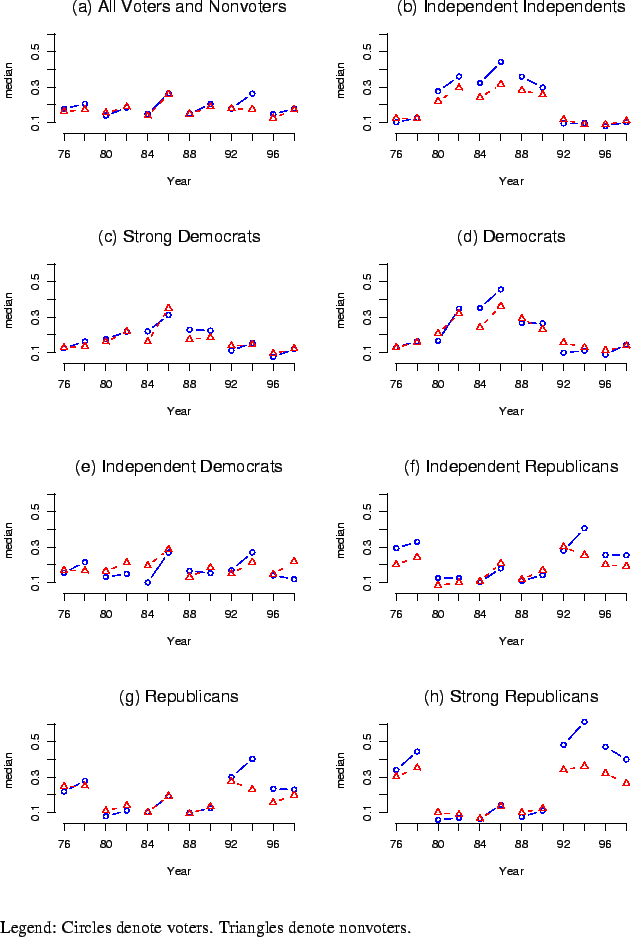
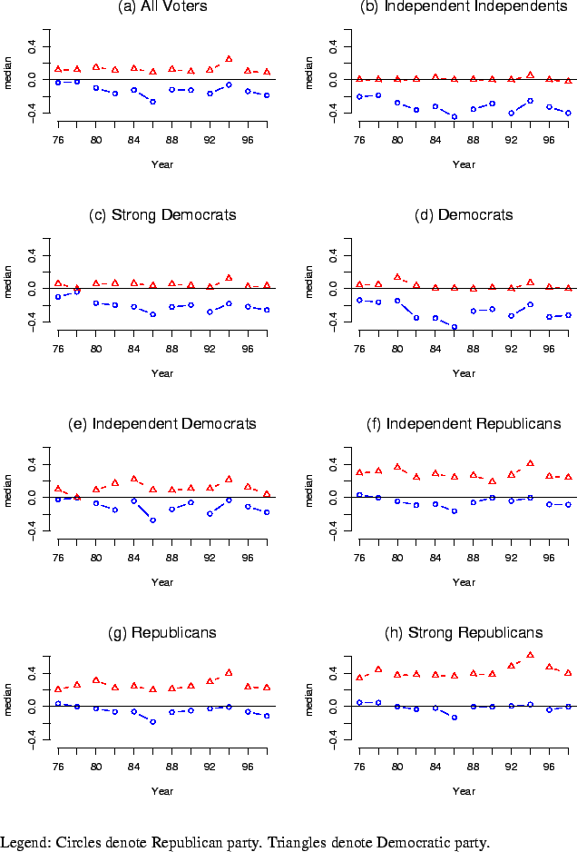

Next: About this document ...
Up: Coordination and Policy Moderation
Previous: Tables
Figure 1:
Median Absolute Differences between Self and Presidential Election
Winner's Party, Voters and Nonvoters
|  |
Figure 2:
Median Signed Differences between Self and Democratic and Republican Parties, Voters
|  |
Next: About this document ...
Up: Coordination and Policy Moderation
Previous: Tables
Jasjeet S. Sekhon
2001-06-28